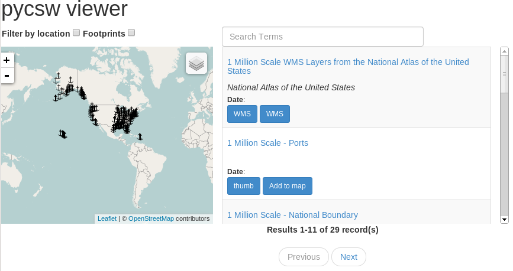
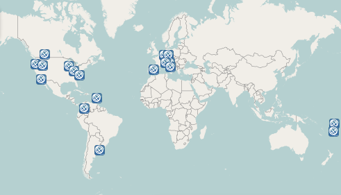

pycsw
Metadata Publishing Just Got Easier
Presented by Angelos Tzotsos / @tzotsos
Outline
- Metadata Background
- Introduction to pycsw
- Features
- Architecture
- Installation/Configuration
- Client Applications
- Open Data and pycsw Deployments
- Future Developments
- Community
What is metadata?
Metadata is often described as “data about data”, or the who, what, where, and when.
In the spatial world, for each dataset we maintain, we should record information about the data such as:
- general description
- location
- usage restrictions
- projection
- technical contact
- date created
- date modified
- version
Metadata standards
Metadata standards have been introduced since the mid 1990’s with the goals of:
- outlining specific required parameters
- common terminology
- consistency
- interoperability
Metadata standards
- Dublin Core: established a core/common group of 15 metadata elements
- FGDC CSDGM: approved by the U.S. Federal Geographic Data Committee originally in 1994 and composed of Sections, Compound Elements, Data Elements
- ISO 19115: International Standards Organization’s TC211 committee created this in 2003 and is composed of more than 400 “Core”, “Mandatory”, and “Optional” elements
- ISO 19139: The XML implementation schema for ISO 19115 specifying the metadata record format
OGC: CSW Specification
The Open Geospatial Consortium (OGC) OpenGIS Catalog Service Implementation Specification, currently at version 2.0.2, is a standard for discovering and retrieving spatial data and metadata.
Catalog Services for the Web (CSW) is a profile/part of the Catalog Service Implementation Specificaton that allows for publishing and searching of metadata.
CSW Operations
- GetCapabilities (mandatory) - allow clients to retrieve information describing the service instance
- DescribeRecord (mandatory) - allows a client to discover elements of the information model supported by the target catalog service
- GetRecords (mandatory) - get metadata records
- GetRecordById (optional) - get metadata records by ID
- GetDomain (optional) - obtain runtime information about the range of values of a metadata record element or request parameter
- Harvest (optional) - references the data to be inserted or updated in the catalog
- Transaction (optional) - defines an interface for creating, modifying and deleting catalog records
Example Requests
Introduction
pycsw is a OGC CSW server implementation written in Python.
pycsw is an Open Source project released under the MIT license.
Introduction
- pycsw fully implements the OpenGIS Catalogue Service Implementation Specification [Catalogue Service for the Web]
- pycsw allows for the publishing and discovery of geospatial metadata
Introduction
The project is certified OGC Compliant, and is an OGC Reference Implementation

pycsw is currently under OSGeo Incubation

Project History
- 2010: Development started by Tom Kralidis in 2010 and was announced in Feb 2011
- Feb 2011: Project was officially announced
- Apr 2011: First official release (0.1) was released and already passed all CITE tests
- Jul 2011: Version 1.0 was released
- Feb 2012: pycsw was included in OSGeoLive 5.5
- Jan 2013: pycsw 1.4 was certified as OGC Compliant
- Apr 2013: pycsw entered OSGeo Incubation
- Aug 2013: Latest stable release (1.6.1)
Goals
- Lightweight and easy to setup: a standalone catalogue, no GUI or metadata editing front end, designed for the use case of exposing ready-to-go metadata (files or in existing DB) through a CSW interface
- Extensible: the ability to add metadata formats and mapping them to a common information model and core/additional queryables
- OGC compliant: always pass CITE tests
Use Cases
- Case 1: Publishing against established metadata management workflow
- Case 2: Publishing against existing metadata database
Features
- Harvesting support for WMS, WFS, WCS, WPS, WAF, CSW, SOS
- Implements ISO Metadata Application Profile 1.0.0
- Implements FGDC CSDGM Application Profile for CSW 2.0
- Implements INSPIRE Discovery Services 3.0
- Supports ISO, Dublin Core, DIF, FGDC and Atom metadata models
- CGI or WSGI deployment
- Transactional capabilities (CSW-T)
- Flexible repository configuration (SQLite, PostgreSQL, PostGIS, MySQL)
- Federated catalogue distributed searching
More features...
- Simple configuration
- Extensible profile plugin architecture
- Seamless integration with Python environments (e.g. GeoNode, Open Data Catalog)
- Includes a commandline utility to administer the metadata repository
- Implements the Search/Retrieval via URL (SRU) search protocol
- Implements OpenSearch
- Realtime XML Schema validation
Standards Support
- OGC CSW 2.0.2
- OGC Filter 1.1.0
- OGC OWS Common 1.0.0
- OGC GML 3.1.1
- OGC SFSQL 1.2.1
- Dublin Core 1.1
- SOAP 1.2
- ISO 19115 2003
- ISO 19139 2007
- ISO 19119 2005
- NASA DIF 9.7
- FGDC CSDGM 1998
- SRU 1.1
- A9 OpenSearch 1.1
Supported CSW Operations
- GetCapabilities
- DescribeRecord
- GetRecords
- GetRecordById
- GetRepositoryItem
- GetDomain
- Harvest
- Transaction
Component Architecture

Software Architecture

Installation: the proper way
- Python Package Index (PyPi)
- openSUSE Application:Geo RPM packages
- UbuntuGIS deb packages
4 Minute Install
$ virtualenv pycsw && cd pycsw && . bin/activate
$ git clone git@github.com:geopython/pycsw.git && cd pycsw
$ pip install -e . && pip install -r requirements.txt
$ cp default-sample.cfg default.cfg
$ vi default.cfg
# adjust paths in
# - server.home
# - repository.database
# set server.url to http://localhost:8000/
$ python csw.wsgi
$ curl http://localhost:8000/?service=CSW&version=2.0.2&request=GetCapabilities
OSGeoLive
pycsw is available to test in OSGeoLive since version 5.5
Project Overview and Quickstart Tutorial are included
Configuration
pycsw’s runtime configuration is defined by default.cfg file.
Key configuration parameters:
- server.home: absolute path of where pycsw is located
- server.url: the public base URL of the service, which is advertised in Capabilities XML
- manager.transactions: "true" or "false"
- metadata:main: service metadata
- repository.database: database connection string
Administration Utility
Setting up the Database:
$ cd /var/www/pycsw
$ sudo python ./sbin/pycsw-admin.py -c setup_db -f default.cfg
This will create the needed SFSQL tables (unless the back-end is PostGIS)
Metadata import
The following will download a data archive and load all metadata XML files into our new database:
$ wget https://github.com/GeoNode/gisdata/archive/master.zip
$ unzip master.zip
$ cd /var/www/pycsw
$ sudo ./sbin/pycsw-admin.py -c load_records -f default.cfg -p ~/gisdata-master/gisdata/metadata/good -r
Multiple Configurations
Configuration files (.cfg) can be used similar to MapServer's map files, i.e. can be included in the url:
http://aiolos.survey.ntua.gr/pycsw/csw.py?config=tests/suites/apiso-inspire/default.cfg&service=CSW&version=2.0.2&request=GetCapabilitiesTester Application

Tester Application

Clients
GeoExt
pycsw demo page
Thanks to Bart van den Eijnden
jQuery/Leaflet
pycsw demo page
QGIS client plugin

OWSLib
OWSLib is a Python package for client programming with Open Geospatial Consortium (OGC) web service interface standards, and their related content models
pycsw and Open Data
- pycsw is embedded in various Open Data portal software
- Metadata editing / management done with portal
- Portal exposes CSW service automagically
- Easy integration into existing apps/workflows
GeoNode
Open Source Geospatial Content Management System
- Geospatial data/metadata management
- Interactive mapping
- Collaboration
- pycsw is embeded and enabled as the default CSW server
Open Data Catalog
Code For America Application
- open data publishing
- pycsw is embeded and enabled out of the box
CKAN
An open-source DMS (data management system) for powering data hubs and data portals
- publishing, sharing, finding and using data
- pycsw is about to be fully integrated into CKAN spatial extension
Data.gov
- Next generation of the US Government Open Data portal is developed using CKAN
- pycsw is currently deployed as beta serving 350k of XML files
- pycsw will be fully deployed as the CSW backend within the next months
Deployment Map

Live deployments from http://pycsw.orgFuture Developments
- CSW 3.0
- CKAN integration
- PostgreSQL full text search (FTS)
- Search engine libraries (Whoosh, SOLR)
- Metadata version control with Git
- New backends (GeoCouch)
- Enhanced harvesting / additional formats / APIs
- Open Data metadata JSON format
- OPeNDAP integration via pydap
- THREDDS catalog harvesting
Workshop
Oregon Coastal & Marine Data Network pycsw Workshop materials available at http://www.coastalmarinedata.net/?p=229
Workshop source code available on https://github.com/geopython/pycsw-workshop
Community
Home Page
Mailing List and IRC
http://lists.osgeo.org/mailman/listinfo/pycsw-devel
#pycsw and #geopython on Freenode
Source Code, Wiki, Issues on GitHub
https://github.com/geopython/pycsw
Professional support
http://www.osgeo.org/search_profile